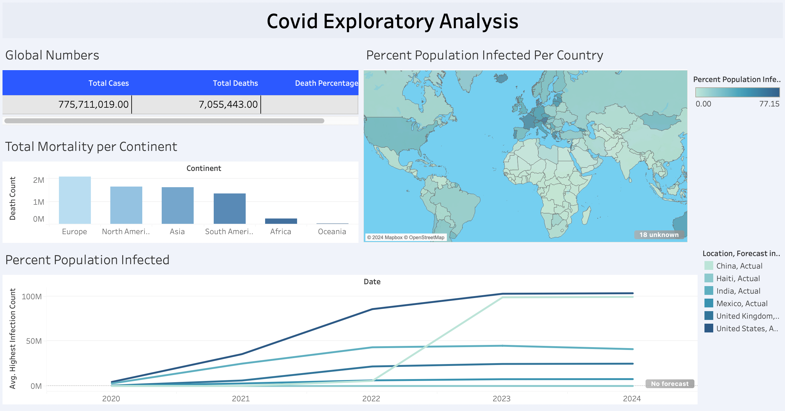
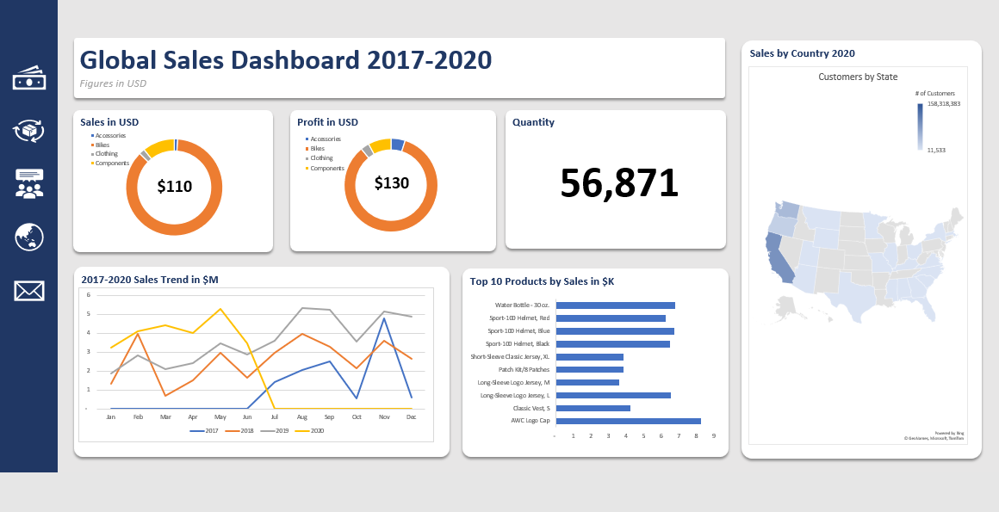

Inspired by Alex Freberg's Data Exploration Project, I cleaned global layoff data from major companies to prepare for initial analysis. Techniques included but were not limited to duplicate removal, data standardization, and table alterations.
.jpg)
A project close to home, I performed exploratory data anlysis on COVID-19 data from 2019-2024. With special focuses on the country my parents migrated from, Haiti, I used tools and functions
such as CTEs, Window functions, and Temp tables to demonstrate how vaccinations turned the tide of a global pandemic.

Explore the global impact of COVID-19 with my Tableau dashboard showcasing mortality trends and infection rates from 2020 to 2024. I used exports from a exploratory data anlysis in a SQL database as a data source. Stay tuned for more updates as
we continue to update trends over time.

In this project, I cleansed and transformed global sales data for a bike and accessories company. I analyzed sales, customer, product, and regional data from 2017-2020 using Power Query.
Visualized key insights using PowerBI including total sales by region, revenue development over time, total profit and lost YTD, average profit per customer, and margins across categories and subcategories.

Analysts often lean towards programming and code outside of excel for advanced data cleaning and analysis.
In this project, I used an identical dataset for bike sales data to demonstrate how Power Query and vizualizations tools in Excel can be applied to transform and join large data sets without leaving the Excel Suites.
I leverage, Power Query, Power Pivot, and Excel charts and graphs to bring sales data to life in a crisp and refreshing manner.